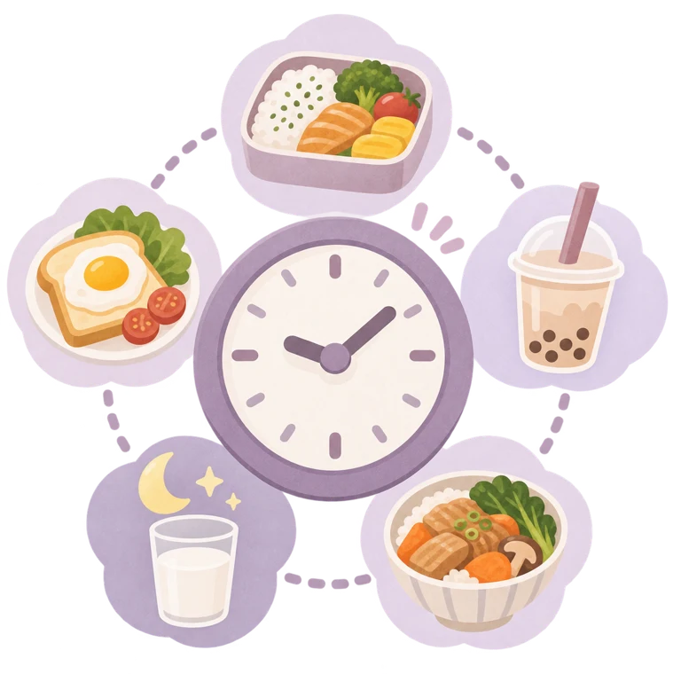

🍱 生活決策力｜第 6 關
怎麼吃，
怎麼吃，
才適合我的生活？
早餐來不及、放學肚子餓、朋友揪喝飲料……
每天都在做飲食選擇。今天，把前面學到的能力放進你的一天。
教師提問：「同樣一份食物，放在不同情境裡，答案會不會不同？」

🌅 07:00｜早餐
30 分鐘後要出門
今天早餐，你會怎麼選？
你為什麼這樣選？
💡 先記錄你的理由。生活裡的飲食選擇，通常不只受到「營養」影響。
教師提醒：這一關不要公布唯一正解，重點是讓學生說出自己的決策依據。
🏫 12:00｜午餐
今天有不太喜歡的魚和青菜
如果不太喜歡今天的菜，你會怎麼做？
💡 遇到不喜歡的食物，不代表只能「全部吃完」或「全部不吃」。你可以先從能接受的部分開始，再想怎麼補足。
教師提問：「如果今天真的不喜歡某一道菜，你有哪些『中間選項』？」
🎒 16:30｜放學
晚餐 18:30，等等還要運動
你有 60 元，而且有點餓
🛒 選好之後，這裡會幫你檢查一下。
💡 這題不是找「最健康」；先想：離晚餐多久？等等要不要運動？現在需要補充多少？
教師提醒：讓學生把「需求、預算、份量」一起放進來判斷。
🧋 17:00｜朋友揪飲料
你中午已經喝過一次含糖飲料
這次你會怎麼選？
💡 飲食選擇不只有「吃」和「不吃」。份量、頻率與搭配，也都是可以調整的地方。
教師提問：「和朋友一起，不一定要點一模一樣的東西嗎？」
🌙 19:00｜晚餐
冰箱裡有一些現成食材
用現有食材，幫自己搭一餐
已選 0 項。這一餐不用追求完美，先看看自己會怎麼搭。
🍳 選好食材後，看看可以做成什麼料理。
教師連結：這一頁可以回扣前面「均衡飲食力」與「料理實作力」。
🌙 22:30｜睡前
突然有點想吃東西
先別急著吃，先判斷一下
想過之後，你會怎麼做？
💡 重點不是「晚上絕對不能吃」，而是先理解自己的狀態，再做決定。
教師提醒：避免把學生導向「好／壞食物」的單一判斷。
🌱
完成｜生活決策力已探索
我的飲食生活力
今天沒有唯一的完美路線。你的選擇反映了時間、預算、習慣、需求與生活情境。
🌅 早餐
🏫 午餐
🎒 放學
🧋 飲料
🌙 晚餐
🌜 睡前
🍽️ 一整天下來，五大類吃到了嗎？
🌱 明天，我想試試看的一件事
🥗
看自己
看自己
🔍
看資訊
看資訊
🛒
做選擇
做選擇
🛡️
看風險
看風險
👩🍳
能實作
能實作
🍱
會生活
會生活
飲食教育不是告訴你「什麼不能吃」。
而是讓你知道，在自己的生活裡，可以怎麼選。
收尾提問：「今天哪一個時刻最像你自己的生活？」